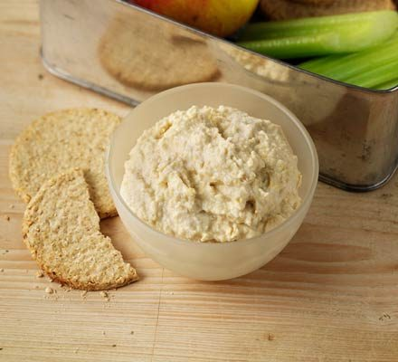

Hummus Recipe

A simple recipe for making the perfect creamy hummus. Easy, quick and very good for you. A perfect compliment to any dish.
Ingredients
- 1 x 400g can chickpea, don't drain
- tbsp tahini paste
- 1 fat garlic clove, chopped
- 3 tbsp 0% fat Greek yogurt
- good squeeze lemon juice
Instructions
Step 1
- Drain the chickpeas into a sieve set over a bowl or jug to catch the liquid. Tip the chickpeas, tahini, garlic and yogurt into a food processor or blender and whizz to smooth.
Step 2
- Whizz in a tbsp of the chickpea liquid at a time until you have a nice consistency, then scrape into a bowl.
Step 3
- Stir in a squeeze of lemon juice and season to taste.
Picture and recipe courtesy of BBC Good Food